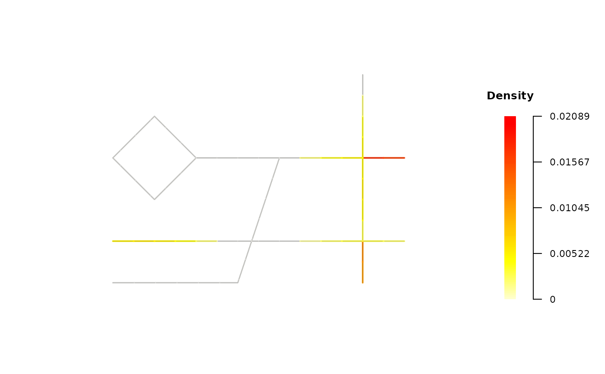
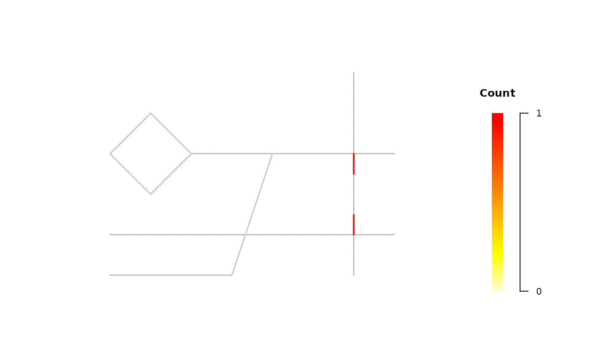

Plot spatiotemporal network or TNKDE results
Source:R/create-spatiotemporal-network.R
plot.spatiotemporal_network.RdCreates a plot to visualize the events, counts, or TNKDE density on a spatiotemporal network. The default is a 2D snapshot plot. The 3D view is optimized for visualizing TNKDE results across time.
Arguments
- x
The
spatiotemporal_networkobject (often the output ofconvolute_spatiotemporal_network).- y
(Not used).
- mode
Character string specifying the type of visualization:
"event"(individual points),"count"(event count per segment), or"density"(TNKDE density).- snapshot_time
Numeric. The hour (0-23) for which to create the static 2D snapshot plot.
- plot_3d
Logical. If
TRUE, an interactive 3D plot usingrglis created.- time_range
Numeric vector (e.g., 0:23) specifying the time points to include in the 3D plot.
- ...
Additional arguments passed to helper functions.
Value
NULL (invisibly). Opens an interactive rgl window for 3D plots, or draws a base R plot for 2D.
Examples
# Run the TNKDE calculation
tnkde_result <- sample_roads |>
create_road_network() |>
create_spatiotemporal_network(
spatial_length = 0.5,
temporal_length = "1 hour"
) |>
set_events(sample_accidents, time_column = "time") |>
convolute_spatiotemporal_network(
bandwidth_space = 2,
bandwidth_time = 1.5,
time_points = 0:23
)
# Plotting examples:
# A. 2D Snapshot: smoothed density
# Use Case: Visualize the primary analysis result at 19:00.
plot(tnkde_result, mode = "density", snapshot_time = 19)

# B. 2D Snapshot: raw event counts per segment
# Use Case: See raw event counts at a specific hour (e.g., 7:00).
plot(tnkde_result, mode = "count", snapshot_time = 7)

# C. 3D Plot: full density cube
# This is the primary visualization for spatiotemporal analysis.
# plot(tnkde_result, mode = "density", plot_3d = TRUE)